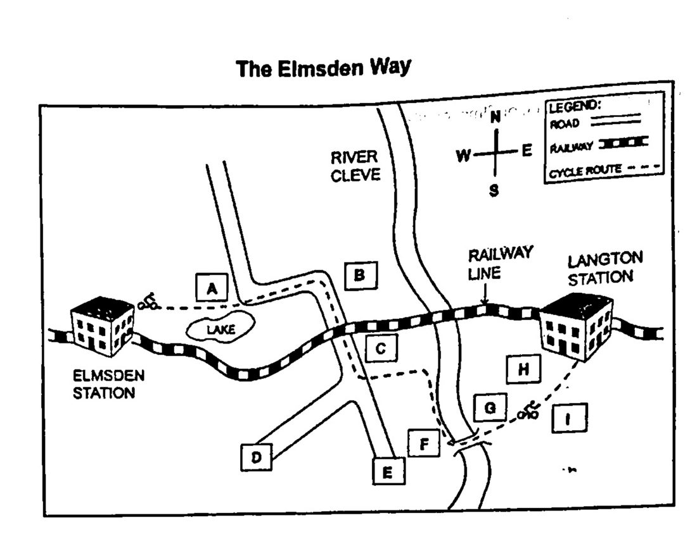

Phiếu trả lời Listening
Bấm số câu để nhảy tới câu đó. Bài làm được tự lưu trên máy này. Thời gian thi thật: khoảng 30 phút.
PART 1 Questions 1–10
Questions 1–5
Complete the notes below.
Write NO MORE THAN TWO WORDS AND/OR A NUMBER for each answer.
A Residence Survey
Example: Age of the interviewee: 19
Current occupation:
Length of living in the north:
Exact living area:
Type of accommodation: a shared
Means of transport:
private: walking and bicycles
public: and taxi
Questions 6–10
Complete the notes below.
Write NO MORE THAN THREE WORDS AND/OR A NUMBER for each answer.
Frequency of eating out:
Places for entertainment:
Other free time activity: go to the
Preferred exercises:
go swimming
go to the gym
go
Part-time course:
📜 Lời thoại Part 1
Section 1. You will hear an interviewer asking an interviewee called Lee to do a questionnaire on residency in the North.
First, you have some time to look at questions 1 to 5.
You will see that there is an example which has been done for you. On this occasion only, the conversation relating to this will be played first.
Yes. I was wondering if you could spare a few minutes to do a questionnaire on your residency here in the North. It won't take long. No, that's fine. Lovely.
First of all, may I get some information about yourself? Okay. May I know your name and age? My name is Lee and I'm 19 years old now. Lee says that he is 19 years old now, so 19 has been written in the space.
Now we shall begin.
You should answer the questions as you listen, because you will not hear the recording a second time. Listen carefully and answer questions 1 to 5.
Excuse me?
I was wondering if you could spare a few minutes to do a questionnaire on your residency here in the north. It won't take long. No, that's fine. Lovely. First of all, may I get some information about yourself?
Okay. May I know your name and age? My name is Lee, and I'm 19 years old now. Great. And could I ask what your job is? .
Are you a student? Actually, I'm going to continue my study in business management next month. But at the moment, I'm a salesman by profession. Oh, right. And how long have you been living here in the North?
Well, I have been in this city since I was three years old, but my family and I had lived in the East for seven years at first. Now I am 19, so I have spent about nine years living here, till now. Great, which part of the northern area do you live in? I live in Spring Park. Have you heard of it?
Yes, of course. So, what about your accommodation? Do you live in a house or a flat or something similar? I used to live with my family in a big house, and now I'm living in an apartment with two of my friends, who are my colleagues as well.
Oh, right. . And, one more question. . What means of transport will you take when you need to go somewhere? Um, if it's not too far away, I'd prefer to go on foot or by bicycle. If there is a long way to go, I take the train or sometimes a cab.
I rarely take buses, because I think the most important things to keep in mind are time and comfort. Great, thanks!
Before you hear the rest of the conversation, you have some time to look at question 6 to 10.
Now listen and answer questions 6 to 10.
Now, let's go to the second part of my questionnaire. I'd like you to tell me, how often do you dine out? Is it once a week or several times a year? I'm afraid neither of those options agree with me. I don't often go out for dinner. once a month.
Every week just seems too often for me. Okay, then where do you usually go for recreation? I often go to places that other people go to. I sometimes go clubbing after work. You know there are some fantastic clubs nearby.
And if you do not have to work during the day, will you go for a show or something?
You know, there is a newly built theatre that opened last month in Spring Park, but I rarely go there, because it's too expensive. I prefer to go to the cinema to see some of the latest movies. Do you like doing sports and what is your main form of exercise? I like swimming and I go to the gym occasionally, but I spend most of my spare time sailing. All right, last question.
Have you taken any part-time courses?
Yes, because I'm really keen on cartoons. I'm doing a Japanese course during the weekends, but I'm still a beginner still a beginner. What a special language! Most people I know would like to learn Spanish or Latin. You must be brilliant.
Well, thank you very much for your time. No problem.
That is the end of section 1. You now have half a minute to check your answers.
PART 2 Questions 11–20
Questions 11–14
Label the map below
Write the correct letter, A-I, next to the questions 11-14
The Elmsden Way

11 Rocks
12 Colleen Nature Reserve
13 Ashington China Factory
14 Langton forest
Questions 15–20
Choose the correct letter, A, B or C.
15 What kind of warning does the speaker give to cyclists:
16 The starting point of Elmsden station is
17 What can people do at the visitor’s centre
18 To commute between Langton and Elmston by train, you need to
19 What should you be aware of when visiting River Elm
20 Where can you get the information if you want to join the local route?
📜 Lời thoại Part 2
Now listen carefully and answer questions 11 to 14. Welcome to our holiday special. Today I'll be talking about a new cycle route in this area called the Elmsden Way. It's well signposted so you can see exactly where to go. And it's an easy route with no steep hills.
It's 35 kilometers long from Elmsden to Langton and consists partly of cycle paths. and partly roads. Let me outline the route briefly, starting at Elmsden Railway Station. The first part is a cycle path running eastwards, roughly parallel to the rail track.
Almost immediately, the railway curves away and goes around the southern side of a little lake. But the cycle path takes the northern route around the lake. Keep your eyes open for the swans that nest there. The path then joins the road and the next landmark is a group of massive rocks which tower over the countryside. You will see them to the east of the road just before the road goes under the railway.
They are very impressive. Soon, you'll come to a fork in the road where you're going to leave the road and head off toward the river.
But if you want to make a detour to Colleen Nature Reserve, go straight on instead of leaving the road here.
Continuing along the cycle path, you'll reach the River Cleve. The cycle path follows the river southwards. After a bit, you'll see the Ashington China Factory, which closed in 1962. When you get there, there's a bridge over the river and you carry on with Langton Forest to the south and farmland to the north. The route ends at Langton Village where you'll find a railway station.
So you can either catch the train here or cycle back to Elmsden. Before you hear the rest of the program, you have some time to look at questions 15 to 20. Now listen and answer questions 15 to 20.
One point to remember when you're cycling on the Elmsden way is that you should keep your eyes open for sheep which occasionally stray onto the cycle path from adjoining fields. So be careful to avoid accidents. The path is well constructed, so it's not affected by wet or muddy conditions. There might be the odd car or tractor when you're cycling on the but most traffic has been diverted to the main road that bypasses the whole area. Now, a bit more about some of the places you'll see.
The starting point, Elmsden Station, was quite busy in the early 20th century with services to several major cities.
But it was closed in the 1950s. And actually, a small company was set up to turn it into a sort of railway museum. maintaining it in the style of the 1950s. And the station was ready for trains to start using it again earlier this year. It's only used by a few local trains though. There's a visitor's center at the station which has a small exhibition about the history of railway transport all over the world.
And a facility for hiring bikes if you don't have one of your own. There's also a small shop just across the road from the station that sells refreshments.
As I said, you can cycle to Langton and return to Elmsden by train, or the other way around, because you can take your cycle on the train. There's no need to book. There's plenty of room and no extra charge. However, the service is very limited. and the trains between these two places don't run on weekday. If you want to see the River Elm, there's a footpath from Elmsden Station.
And you can safely leave your bike in the car park there. Leave yourself plenty of time though. Going down is easy, but the climb up is very steep.
So the walk back up to the top can take quite a while. But it's worth the effort. The scenery is wonderful and the footpath runs right next to the river down to a waterfall.
Finally, if you'd like to do some more cycling in the area, there are lots of other cycle paths. We'll be talking on the radio about them and you'll be able to get full details in the Saturday edition of the local paper. The National Cycle Network also has some details on their website, although I have to say they don't have many local ones yet. But that may change. So we'll be telling you more about...
That is the end of Section 2. You now have half a minute to check your answers.
PART 3 Questions 21–30
Questions 21–25
Choose the correct letter, A, B or C.
Taking part in archaeological excavations
21 How did Tomas and May both feel about parts of their studies before going on excavations?
22 What surprised Tomas and May most when they were excavating?
23 What did May find that was particularly interesting?
24 What did Tomas and May both find surprising about the people they were studying?
25 What do Tomas and May both say about the people they worked with?
Questions 26–30
Complete the flow chart below
Choose FIVE answers from the box and write the correct letter, A–I, next to Questions 26–30.
A some soil samples
B some photographs
C objects to team leader
D labels on objects
E a record sheet
F a unit number
G further analysis of objects
H tools from the site hut
I a comprehensive plan
Excavation Projects Next Week
Take and clean the area
↓
Take photos of the site to be excavated
↓
Ask your team leader for
↓
Make of the site and measure the levels
↓
Take
↓
Register and put
↓
Put in site hut together with tools
📜 Lời thoại Part 3
Now turn to Section 3.
Section 3. You will hear two archaeology students, called May and Thomas, talking about the excavations they have been involved in. First, you have some time to look at questions 21 to 25.
Now listen carefully and answer questions 21 to 25.
Hi, Thomas. Did you have a good time in Turkey? Hi, May. I had a great time. But I have to say, although I've always been keen on being an archaeologist, before I went on an excavation, I used to find some of the things we did in class totally mystifying.
Me too. Before I did my trip to Egypt, I was often irritated at not being able to picture exactly what the lecturers meant. They were always so excited about everything. Yeah, we did a lot of practical stuff on the excavation, which I really needed.
Was it harder than you expected? Yes, mostly. I learned a lot more about the rules of archaeology. I was really taken aback by how precise you have to be with your data collection and recording. I took loads of photographs and they proved very useful.
good with the camera. I'm with you about the recording, though. I had no idea it would take so much time. Did you find anything particularly interesting when you were digging? I did, actually.
I had to dig a trench in part of the site. Interestingly, there weren't any bits of pottery there like you would expect to find, but I did get out some pieces of cloth and what looked like one or two silver beads. But our team leader said that they weren't, they were lead weights for weaving. What about you?
I didn't find anything myself, but quite a few of the other students did. What I enjoyed was trying to identify what crops the people who had once lived in the area had grown. They seemed to have had a much better diet than I expected. Fish and wheat, as well as oats, honey and fruit, lots of different things. Yes, it's amazing, isn't it?
And from measuring the bones in one of the sites, we found that the people were actually taller and had better teeth than the people who live in the area today.
Probably due to less carbohydrates. How were the people you had to work with? My team was great. They were made up of people my age from all over the world. It was good to work with them. lots of fun, and they taught me a lot.
all, though, getting up at dawn every day and being out until late afternoon. Oh, that's true enough. We were all exhausted, and I'd like to have an international team next time. Mine was mainly made up of English and Americans. I enjoyed the field school, but everyone was much more experienced and older than I was.
It was a bit scary.
Before you... Now listen and answer questions 26-to-36...
You know there's going to be a question about the excavation projects in our test next week. Should we just run through it for practice? Good idea. Our team leader was very strict about following the right procedure. He used to say, never excavate anything if you're not sure it's worth excavating.
Now, I think that when you've decided where to excavate, you go to the site hut and get whatever tools you need. then clean the area so that you need the area so you need. you know exactly how big it's going to be.
Okay. And you need to make sure you can remember what the site looks like before you begin digging. I think photos are probably best for that, rather than drawings at this stage. I agree. You then attach them to a record sheet, which you get from the team leader, remembering to put in the site code unit number and time.
So much red tape.
digging. That's true. I think you then have to draw up a detailed plan of where you're digging and then measure the limits. And this is all before you actually start digging. Okay, so far so good.
Now you can start with the trowel, but first you have to get soil samples and you keep them for further analysis. Anything that you don't think is useful, you leave in place on the site. .
any object you retreat including animal bone stone as well as artifacts they should all be registered and labeled and then you put them in a plastic bag and return them to the site hut. That's right and remember to leave the tools and site hut as you would expect to find them. Ha! Looks like we've learned something after all. That is the end of section 3.
You now have half a minute to check your answers.
PART 4 Questions 31–40
Complete the notes below.
Write ONE WORD ONLY for each answer.
Crocodile Study
Background
Type of crocodile studied: crocodiles found in salt water
Location of study: Northern Territory, Australia
Significance of study: unique because it was the first time a had been used to track crocodiles
Previous studies:
done using
stressful method, also unreliable due to loss of the
Reasons for study: the management of crocodiles by the government may not be effective
Research questions:
How far can crocodiles travel?
How easily can crocodiles ?
Challenge: crocodiles are difficult to observe because they avoid
Details of study:
number of crocodiles involved: three
method: crocodiles were measured and tagged then relocated using a
monitoring: scientists got data from a transmitter located on the crocodile’s
Results of study:
Each crocodile
first stayed at the site for a few weeks, moving in a random way
then took the most way home
Conclusions:
a change in policy is needed
when travelling long distances, crocodiles may use
i) their own senses and the position of the
ii) a similar system to
📜 Lời thoại Part 4
Now turn to Section 4.
Section 4. You will hear part of a presentation on recent crocodile research in Australia. First, you have some time to look at questions 31 to 40.
Now listen carefully and answer questions 31 to 40.
Hello everybody. I've just arrived back from my field trip, and Professor Martin has asked me to tell you about it today in our research forum. As many of you know already, my dissertation relates to crocodile behavior. My specialty is the saltwater crocodile, which is much larger than the freshwater crocodile. I've just come back from the northern territory, where I've been part of a groundbreaking study, observing crocodile movements.
Ah, it's not the only time crocodile movements have been followed, but this study is unique, because we tracked crocodiles using a satellite.
Up until now, studies like this one have only been able to track crocodile movements using radio. Not only was this method more stressful for the animal, which had to be caught several times, but it was also not very reliable, as the signal was often lost. So, you might be wondering why we chose to track crocodiles. Well, crocodile attacks on people and livestock are rare. But when they do happen, the government believes that the problem crocodile should be relocated rather than killed.
But can we be sure that the crocodile won't simply return to the place where it came from?
So, we designed a study to try to answer these questions. We wanted to establish, firstly, how far crocodiles can travel over a period of time. The second thing that we wanted to know was how easy is for crocodiles to navigate. Could they find their own way home again if they were moved to another location? Of course, the biggest challenge when observing crocodiles is that they are very secretive animals.
They stay well away from people if they can, which makes them really difficult to follow.
I'll give you some information about the design of the study now. There were three crocodiles in our study, all from the northern territory, and measuring between three and four and a half meters in length. crocodiles were captured, measured and tagged, and then taken by helicopter to new locations up to 400 kilometers away from where they were found. We were then able to use the tracking data to monitor their movements. We used a specially designed transmitter, which we attached to each animal's head. The transmitter collected the data and related back to us.
The results of our study were quite astounding. After they were released, each crocodile remained in the release site for some weeks, making random movements around the site each day. But then, they each swam home, traveling by the most direct route. These crocodiles showed remarkable navigational skills and stamina to swim such long voyages. So, what conclusions did we draw from this?
Well, we prove that crocodiles are clearly capable of making marathon swims to find their way home. This meant that the current policy should be reconsidered.
You might be wondering how the crocodiles managed to get home. We concluded that they used factors such as sight and smell, as well as their position to the sun, to point their way. It's a little known fact that crocodiles are more closely related to birds than they are to any other reptile.
it's possible that they use the same system to negotiate long journeys. Now that the study has been completed.
That is the end of section 4. You now have half a minute to check your answers.
Phiếu trả lời Reading
Bấm số câu để nhảy tới câu đó. Bài làm được tự lưu trên máy này. Thời gian thi thật: 60 phút.
READING PASSAGE 1 Questions 1–13
You should spend about 20 minutes on Questions 1–13, which are based on Reading Passage 1 below.
Ambergris – what is it and where does it come from?
In the ancient world, they waxy grey substance we now refer to as ambergris was highly prized for its medicinal properties, and was widely used as a spice, which was believed to be an aphrodisiac when added to food or wine. Ambergris itself is pleasantly aromatic, especially when warmed, and it was also highly valued as a fixing agent in the making of perfume, since it enabled a scent to retain its fragrance for much longer than might otherwise have been possible. Most ambergris was found in the form of lumps floating on the surface of the sea, or washed up on the shores of tropical and temperate oceans, At one time, ambergris was worth its weight in gold, but there was much confusion about its origins.
Ambergris was known to the Arabs as ‘ambar’ and was originally called amber in the west in the Middle Ages. This eventually led to further confusion in the popular mind between ambergris and true amber, the mineral known to mineralogists as succinite, which is actually fossilised tree resin, and generally yellow in colour. Both substances were rare and costly, and both were associated with the sea, largely because for Europeans the most common source of amber was the shores of the Baltic. In Chapter 92 of Moby Dick, the American writer Herman Melville pours scorn on those who believed the two substances to be the same: ‘Though the word ambergris is but the French compound for grey amber, yet the two substances are quite distinct. For amber, though at times found on the sea-coast, is also dug up in some far inland soils, whereas ambergris is never found except upon the sea. Besides, amber is a hard, transparent, brittle, odorless substance, used for mouth-pieces to pipes, for beads and ornaments; but ambergris is soft, waxy, and so highly fragrant that it is largely used in perfumery.’
Moby Dick was published in 1851, by which time the mystery of the origins of ambergris had been resolved by the scientific community. In 1783, the botanist Joseph Banks, who had accompanied Captain James Cook on his voyages of discovery in the Pacific, presented a paper to the Royal Society of London by the German physician Dr. Franz Xavier Schwediawer in which it was conclusively proved that ambergris came from sperm whales. In this, he was confirming an observation made in the 13th century by the great Venetian traveller Marco Polo who, while on the island of Socotra in the Indian Ocean, had witnessed a sperm whale vomiting up ambergris. But whereas Marco Polo imagined that the whale had swallowed the lump in the depths of the sea, Schwediawer showed that the origin of the material was inside the whale whale itself.
The sperm whale is the largest of the odontocetes, or toothed whales, Males can grow up to 20 meters in length. Melville described the sperm whale as ’ the king of whales’, and his novel Moby Dick is based on the pursuit of one such creature. Sperm whales are renown for their ability to dive to great depths, possibly a far 3,000 metres below the surface, and for remaining underwater for periods of two hours or more in pursuit of their favourite prey, the giant squid.
It is from the problems the whales have in digesting the beaks of such creatures that ambergris has its origins. The beak is sharp and irritates the what lower intestine, which responds by producing a black, foul-smelling liquid. It is not clear to scientists whether this secretion should be considered a normal response by the whale’s digestive system or a pathological one, but from time to time large quantities of the liquid are vomited up by the whale. Once outside the whale’s body and exposed to air, the substance hardens, acquiring the waxy, greyish and pleasantly aromatic characteristics of ambergris. Often the beaks of squid are still found embedded in lumps of ambergris, some of which can weigh several hundred kilograms. Melville took some delight in contrasting the origins of ambergris with the high value placed upon it by refined society: ’ Who would think, then, that such fine ladies and gentlemen should ragale themselves with an essence found in the inglorious bowels of a sick whales!’
Sperm whales were ruthlessly pursued by commercial whalers in the 19th and 20 centuries. In 1963-64 alone, almost 30,000 individuals were killed, and only the imposition of a ban on the hunting of sperm whales in 1984 saved the species from extinction. Ambergris was by far the most valuable product to be extracted during the processing of the whales’ carcasses, and over 90 per cent of the annual worldwide total was acquired in this way, as a by-product of commercial whaling. However, even before the ban on hunting sperm whales was imposed, the 1972 Marine Mammal Protection Act had prohibited trade in ambergris. Just as petroleum and plastic products were replacing other natural products of whaling, so ambergris was supplanted in the making of perfume by other materials, some natural and some synthetic in origin. Nevertheless, it is possible that, as sperm whale populations recover to their former numbers in the wild, so the sight of lumps of ambergris washed ashore along the tide line will once again become a familiar one to beachcombers the world over.
Questions 1–6
According to the information in Reading Passage 1, classify the following facts as referring to
Write the correct letter, A, B, C or D, in boxes 1-6 on your answer sheet.
A ambergris only
B amber only
C both ambergris and amber
D neither ambergris nor amber
1 very expensive
2 a food flavouring
3 used as currency
4 sweet-smelling
5 referred to by Herman Melville
6 can be seen through
Questions 7–9
Complete the flow-chart below
Choose NO MORE THAN TWO WORDS from the passage for each answer.
Write your answers in boxes 7-9 on your answer sheet
How ambergris is formed
Ambergris is formed in whales because of problems digesting the of giant squid.
↓
Black liquid is produced and is from time to time
↓
The liquid on contact with the air.
Questions 10–13
Do the following statements agree with the information given in Reading Passage 1?
In boxes 10-13 on your answer sheet write
TRUE If the statement agrees with the information
FALSE If the statement contradicts the information
NOT GIVEN if there is no information on this
10 In the 20th century, most of the world’s ambergris came from processing dead whales.
11 The value of ambergris has increased recently.
12 Ambergris remains an important ingredient in perfume
13 New uses have recently been found for ambergris.
READING PASSAGE 2 Questions 14–26
You should spend about 20 minutes on Questions 14–26, which are based on Reading Passage 2 below.
PHOTOGRAPHY
Photography emerged as part of a cluster of technical inventions and innovations around the middle of the nineteenth century. Hailed as a great technological invention, it immediately became the subject of debates concerning its aesthetic status and soda uses
A Central to the nineteenth-century debate about the nature of photography as a new technology was the question as to how far it could be considered as art. It was celebrated for its putative ability to produce accurate images of what was in front of the camera’s lens: images which were seen as being mechanically produced and thus free of the selective discriminations of the human eye and hand. On precisely the same grounds, the medium was often regarded as falling outside the realm of art as its assumed power of accurate, dispassionate recording appeared to leave no room for the artist’s compositional creativity.
B Debates concerning the status of photography as art continued to take place in periodicals throughout the nineteenth century. The French poet Baudelaire linked ‘the invasion of photography and the great industrial madness of today’ and asserted that if photography is allowed to deputise for art in some of arts activities, it will not be long before it has supplanted or corrupted art altogether. In his view, photography’s only function was to support intellectual enquiry.
C Baudelaire was not alone in this view. Absolute material accuracy was seen as the hallmark of photography, and the nineteenth-century desire to explore, record and catalogue human experience, both at home and overseas, encouraged people to emphasise photography as a method of naturalistic documentation, rather than any type of art form.
D Photographers responded to criticisms of this kind in two ways: either they accepted that photography was something different from art and sought to discover what the intrinsic properties of the medium were, or they pointed out that photography was more than a mechanical form of image-making, that it could be worked on and contrived so as to produce pictures which in some ways resembled paintings. ‘Pictorial’ photography from the 1850s onwards sought to overcome the problems of photography by careful arrangement of all the elements of the composition and by reducing the signifiers of technological production within the photograph. For example, they ensured that the image was somewhat blurred: they made pictures of allegorical subjects, including religious scenes, and those who worked with the gum bichromate process scratched their prints in an effort to imitate something of the appearance of a canvas.
E In the other camp were those photographers who celebrated the qualities Of straight photo- graphy (with an emphasis upon direct documentary typical Of the Modern period in American photography)and did not want to treat the medium as a kind of monochrome painting. They were interested in photography’s ability to provide apparently accuratem records of the visual world and tried to give their images the formal status and finish of paintings while concentrating their attention on its intrinsic quality.
F Photography in Britain and France was initially heralded for its technical recording abilities. With few exceptions, the emphasis was on picture-taking rather than picture- making-to echo a distinction made by Margaret Harker. She suggests that the development of the art of photography in the late 1850s can be partly accounted for through the increasing involvement of people trained as artists. They brought with them a concern for form and composition and, in particular, the use of light. Photography came to encroach very directly on genres of painting such as portraiture, not only taking over some of the work of painters, but also extending their work. For instance, while few could afford the time and cost of sitting for a painted portrait, the studio photographer could offer a similar service more cheaply. As such, portraiture became more democratically available. This did not prevent a continuing hierarchy: the painted portrait was still commissioned by the wealthy and the aristocracy. But it did allow a greater number of people the status of seeing themselves pictured.
G Furthermore, photography provoked artists to re-examine the nature and potential of paint as a particular medium. Photography appeared to be more successful than painting in capturing likenesses. It had a sense of instantaneousness that painting lacked. It has been suggested that photography encouraged Impressionist painters to experiment with manners of painting which could also capture a sense of the moment, and the passage of light. It is a truism that photography released painting from its responsibility for literal depiction, allowing it to become more experimental. However, the developing relationship between the two was considerably more symbiotic.
H Another respect in which photography may be said to have extended art was in its role as the re-presenter of art objects, It was no longer necessary to travel to Florence to see paintings of the Medics, or to Egypt to contemplate classical architecture or artefacts; you could visit an exhibition and view reproductions.
Questions 14–17
Reading Passage 2 has eight paragraphs, A-H.
Which paragraph contains the following information?
Write the correct letter, A-H, in boxes 14-17 on your answer sheet.
14 fears voiced about the potential threat posed to art by photography
15 the skills of artists being used in photography
16 the attempts of photographers to imitate art
17 the influence of photography on artists and painting
Questions 18–22
Complete the summary of paragraphs D and E below.
Choose ONE WORD ONLY from paragraph D or E for each answer.
Write your answers in boxes 18-22 on your answer sheet.
Photographers’ responses to criticism
In response to the suggestion that photography could not be considered an art form photographer acted in two ways. Some of them rejected this criticism, certain that they could create pictures similar to did this by carefully setting up the different parts of the before taking the photograph. Other things they did included causing the picture to be rather and some who wanted to try to make the print look like a canvas even their photographs. Others were anxious that their work should not be looked upon as some sort of painting and were much more concerned with the fact that the camera seemed to be able to produce a more accurate representation of what they could see around them.
Questions 23–26
Do the following statements agree with the information given in Reading Passage 2?
In boxes 23-26 on your answer sheet, write
TRUE If the statement agrees with the information
FALSE if the statement contradicts the information
NOT GIVEN if there is no information on this
23 In the 1850s, trained artists were reluctant to take up photography.
24 Many photographers felt the need to learn certain techniques from taking art courses.
25 Photography brought the demand for portrait painting to an end.
26 With the advent of photography. some painters no longer concerned themselves with accuracy.
READING PASSAGE 3 Questions 27–40
You should spend about 20 minutes on Questions 27–40, which are based on Reading Passage 3 below.
The long view
Climate change, moon bases, cybercrime we all know the predictions, but how are they made? One expert explains the science of futurology
The business of predicting the future has a long history. Several millennia ago in ancient Greece, people would consult Apollo, the god of prophecy, to learn if fortune favoured their chosen course of action. The tradition has changed considerably since then. Today, futurology is a science that Drives a thriving business - its three Main consumers being the military, big Business and national governments. Modern futurists do not predict that a certain event will occur at a particular time. Instead they look at what is happening now to see what this may lead to further down the line. Alternatively, they start with a desired Result and work out how people and Organisations can be manoeuvred into Realising that ambition.
The oil company Shell has been one of the major producers of future studies. It recently published a comprehensive study looking at how people may live in 2020 and 2050, given the type of energy which is purchased. Philip Watts from Shell says, ‘This is not an exercise in prophecy. Rather it is designed to challenge our thinking so that we can make better choices in today’s business world.’
The short-term attitudes and bureaucracy of many government can be frustrating to futurists, but this mutual wariness is slowly changing. The Scottish Parliament recently hosted a conference of 150 futurists form across the globe. The parliament is setting up a forum to look at where Scotland is heading in the next 20 years. Among the issue are demographics and economic competition within Europe and with Asia. It’s a first for the United Kingdom, although not for Europe- this strategy has already been put into practice in Finland.
Eamonn Kelly, head of the San Francisco-based Global Business Network futurist group, was one of those who attended the conference. According to Kelly, ‘There are many different tools a futurist can employ but essentially there are three main ingredients. First, there is the ’science’, which can encompass everything from environmental studies to psychology. Then, there is the “craft”, which may include interviews and the creation of maps of cause and effect. Finally, there is the “art”, the intuitive ability to meld all this into a coherent whole.
Dr Jame Canton is founder of the San Francisco-based Institute for Global Futures and has been an adviser to leading US companies. Like many futurists he started in the private sector but is also comfortable in academia and has an urge to change things for the better.’ A futurist is an alchemist who mixes the qualitative,’ he says. ‘He needs intuition and has to work with people from a range of academic backgrounds gathering primary evidence about what motivates people. Futurists are constantly discussing ideas with their peers, but they do not simply surf the net picking up on the latest fad.’
New Zealand futurist Robin Gunston say, “I don’t believe you can train yourself to become futurist. A certain amount of this is to do with how your brain is hard-wired and we know this is difficult to change. Futurology requires extensive life experience and a broad education to test theories against. Much of modern teenage culture is about me, what I want and what the world owes me-that does not make it easy to see different kinds of futures and pose the hard questions about how we will get there.’
Those best able to respond to futurists are the most agile. ‘Large corporations beholden to shareholders and governments burdened by bureaucracy are often simply too slow. Asian companies tend to be better prepared because they take a longer perspective. Sony, for example is very forward looking,’ Canton says. ‘There will be sunset and sunrise nations and corporations, in terms of prosperity in the 21st century. The winners will be those corporations and governments which conduct future studies and take steps to become future-proofed.’
According to Alan Beckley, a former West Mercia chief inspector and past president of the Police Futurists International (PFI), getting public bodies in the UK future-proofed could be a long process. ‘People are concerned about the methodology and the reliability of future studies,’ he says. They are more likely to follow their political masters than go to them and say. “We have done this scenario, and this is what we should do”. However, as the Scottish Parliament has shown, there are a few examples of government exercises. Also, in 2003 Britain’s Foreign and Commonwealth Office (FCO) published for the first time its strategic thinking for the next decade. This document was drawn up with the help if in-house and outside futurists. FCO minister Bill Rammell says,” We do occasionally look further ahead than the next ten years on issues such as demographics. But the period chosen for the strategy was deliberately a decade. Even assumptions about technology get very shaky beyond that.
American futurist Steve Brant stresses the importance of remembering that the road ahead has yet to be chosen. ‘People can create the future they want using various points of leverage,’ he says. ‘We have much more influence over what the future will be like than many of us realise’. Futurists used to be like firefighters-they tried to work out what to do if things went wrong. Now, the aim of this profession is to imagine the best possible future for society and start creating it today.
Questions 27–33
Look at the following statements (Questions 27-33) and the list of people below.
Match each statement with the correct person, A-F.
Write the correct letter, A-F, in boxes 27-33 on your answer sheet.
NB You may use any letter more than once
27 Flexible organisations are in a better position to make use of futurology
28 Predictions about any period beyond the next ten years cannot be trusted
29 Only certain people are suited to becoming futurists
30 Future studies are designed to inform current commercial decisions
31 Futurology involves a broad exchange of information but is not influenced by every new idea
32 People are not aware of the extent to which they can determine the future
33 A lack of confidence in futurology affects how widely it is used
List of People
A Philip Watts
B Dr James Canton
C Robin Gunston
D Alan Beckley
E Bill Rammell
F Steve Brant
Questions 34–37
Complete the sentence below.
Choose NO MORE THAN TWO WORDS from the passage for each answer.
Write your answers in boxes 34-37 on your answer sheet.
34 A report by Shell considered the impact of various kinds of on future lifestyles.
35 The Scottish parliament has decided to use futurists to advise on from Asian and other European countries.
36 Dr James Canton is similar to other futurists in that he began his career in the
37 Britain s FCO sometimes studies developments in areas like beyond 10 years
Questions 38–40
Choose THREE letters, A–G.
Write the correct letters in boxes 38-40 on your answer sheet.
38–40 Which THREE of the following statements are true according to the passage?